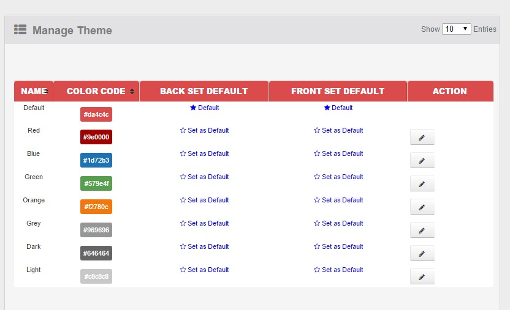
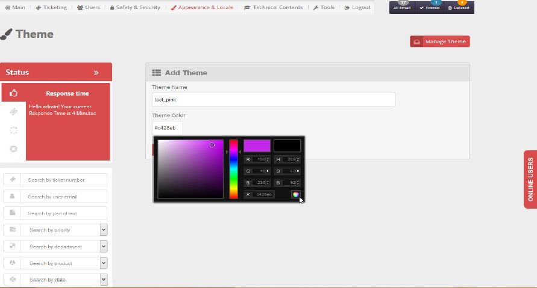
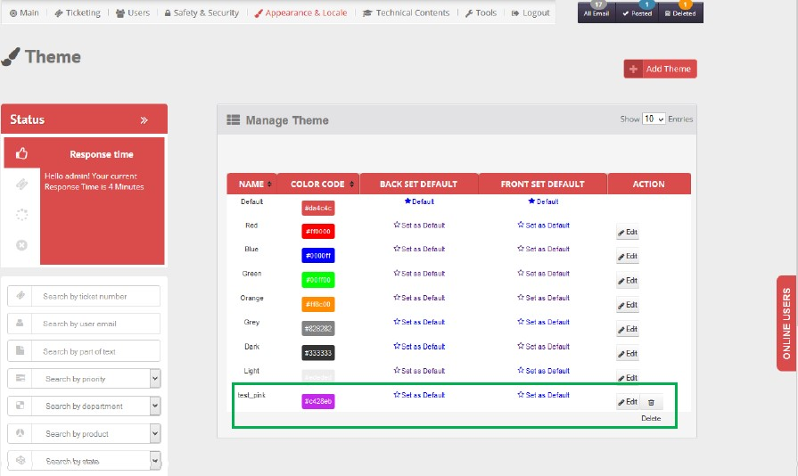
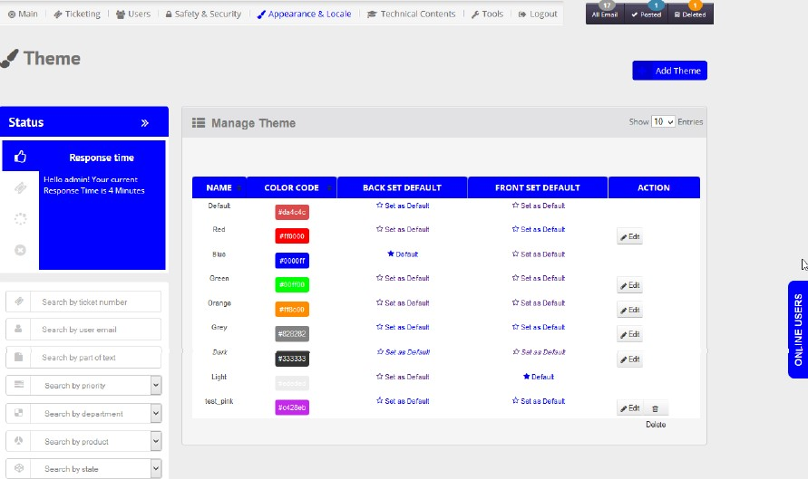

B1ST comes with 7 built-in styles for your frontend & backend in addition to the capability to create any new styles of yours with no limit.
- Select Theme from Appearance & Locale top menu. Manage Theme window will open with seven built-in colored themes:
- Red
- Blue
- Grey
- Light
- Dark
- Green
- Orange

- To Add theme: set theme name and select color from color picker (both theme name and theme color combination is unique), then click on Add
[NB: color code should be in valid format, otherwise display notification]

- Here, theme is added successfully and this newly added theme is editable and even can be deleted (built-in themes can not be deleted).

- You can set a theme for front-end while set another theme for back-end. thus you can use a theme that match with your website colors while keep the backend theme which you feel comfort with as it without any change.
- While any theme is set irrespective of backed or front end , it cannot be edited

Created with the Personal Edition of HelpNDoc: Full-featured Documentation generator